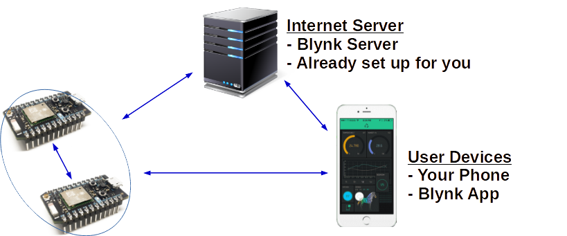

IoT Simulation
We will start with a simulation evironment. This will introduce us to the 3 basic parts of an IoT enterprise solution:
- WiFi/Bluetooth-connected micro-controller & electronics
- IoT-customized Cloud Servers
- Graphic User Interface for monitoring and remote-controlling the electronics

For our IoT micro-controller we will be using the Espressif (ESP) family of development boards (namely, ESP8266 & ESP32).
For our IoT Cloud, we have a customized Blynk server in our office.
And for our GUI Dashboard, we will be using the Blynk Legacy application on our phones/tablets.
Of course, all of these devices must be connected to the internet at all times for things to work seemlessly.
Registration
The registration link for the custom Blynk Service can be found here.
Please make sure to:
- Use an email you can easily get to on your laptop/phone/tablet
- Remember the password!
Blynk App
The Blynk App to download to your phone/tablet is the LEGACY version of the app:
Android
iOS
Simulators
The IoT simulators can be found here.
Tutorial
The tutorial we will be following can be found here.